Sector Académico
CogniBookIA
Chatbot con arquitectura RAG alimentado por la bibliografía oficial de cada cátedra. Precisión académica garantizada.
Automatización precisa para educación, comercio y desarrollo de software. IA aplicada sin hype, con resultados medibles.
Confían en nosotros


Soluciones
Arquitecturas diseñadas para resolver desafíos reales de educación, comercio y desarrollo de software.
Chatbot con arquitectura RAG alimentado por la bibliografía oficial de cada cátedra. Precisión académica garantizada.
Automatización de atención al cliente vía WhatsApp Business API con módulo transaccional y RAG para FAQ.
Capacitación in-company para transformar desarrolladores en orquestadores de agentes autónomos.
Metodología
Un proceso iterativo, ágil y centrado en resultados que garantiza la entrega de valor en cada etapa.
Analizamos tu situación actual, identificamos oportunidades y definimos KPIs de éxito.
Diseñamos una hoja de ruta personalizada alineada a tus objetivos de negocio.
Ejecutamos con equipos multidisciplinarios, metodologías ágiles y entregas iterativas.
Medimos, aprendemos y escalamos. Mejora continua basada en datos reales.
Áreas de impacto
Soluciones Implementadas
Arquitecturas RAG, automatización comercial y capacitación en IA entregadas a organizaciones de educación y comercio.
Automatización con IA
Orquestación de agentes autónomos y procesamiento de lenguaje natural para optimizar procesos complejos.
Capacitación Empresarial
Programas intensivos diseñados para que cada hora invertida se traduzca en minutos ahorrados en el día a día.
Consultoría Tecnológica
Acompañamiento estratégico para que la adopción de IA sea sostenible y potencie el impacto del negocio.
Tecnología
Herramientas modernas y escalables para cada desafío.
Reconocimientos
Nuestro proyecto CognibookIA, una plataforma de IA soberana para la educación universitaria basada en RAG, fue presentado en el Congreso Internacional de Educación y Conocimiento de la Universidad de Alicante.
Ver publicación en LinkedInCasos de Éxito
Historias reales de organizaciones que potenciaron su negocio con datos e inteligencia artificial.
B2BLatam
Junto al equipo de B2BLatam, finalizamos un programa intensivo de capacitación en IA diseñado con un único norte: que cada hora invertida se traduzca en minutos ahorrados en el día a día.
Durante tres encuentros prácticos, fuimos mucho más allá de los conceptos teóricos. Nos metimos de lleno en prompting estratégico y fundamentos sólidos, el ecosistema de herramientas clave para este 2026 y Microsoft Copilot aplicado a escenarios reales de negocio.
Lo más valioso fue ver a los participantes detectar, en tiempo real, oportunidades concretas para optimizar procesos complejos y automatizar tareas repetitivas. El éxito de una capacitación no se mide en horas dictadas, sino en los cambios que el equipo implementa desde el día uno.
Un agradecimiento enorme a Florencia Bernini y Daniel Segovia por confiar en nosotros para este proceso, y a todo el equipo de B2BLatam por la energía y el nivel de participación.
UNLa — Universidad Nacional de Lanús
La UNLa estuvo presente en el Congreso Internacional de Educación y Conocimiento en la Universidad de Alicante, España, presentando un proyecto de investigación y desarrollo que utiliza RAG AI para generar una plataforma educativa de IA soberana.
El proyecto se llama Cognibookia y ya está en etapa de testeo en ambiente real. Este desarrollo se confeccionó en el marco de Sicilia Labs Tech con el apoyo del Departamento de Desarrollo Productivo y Tecnológico en UNLa.
Confiamos en que la cooperación en la investigación y desarrollo por parte de docentes, estudiantes y universidades es fundamental para el crecimiento y generación de conocimiento.
Equipo
Profesionales apasionados por la tecnología y los resultados.
Fundador & CEO
Ingeniero de software con más de 15 años de trayectoria liderando equipos de ingeniería en startups y multinacionales. Como director académico y especialista en arquitectura de IA aplicada, diseña estrategias tecnológicas robustas que transforman procesos de negocio en soluciones eficientes y escalables.
gussiciliano@gmail.comCo-fundador
Especialista en desarrollo Full Stack y arquitectura de software. Con un enfoque riguroso en ingeniería de sistemas, optimización de APIs y escalabilidad, garantiza que cada integración de IA y automatización cuente con una infraestructura sólida, segura y lista para producción.
julianstomczak@gmail.comCo-fundador
Desarrollador enfocado en la automatización de procesos e implementación práctica de soluciones digitales. Gracias a su sólida capacidad técnica y su perfil docente, se destaca por traducir requisitos complejos en software funcional, facilitando la adopción tecnológica en equipos de trabajo.
ezequieldbo25@gmail.comCo-fundadora
Desarrolladora Full Stack especializada en desarrollo web moderno y automatizaciones orientadas al usuario. Su enfoque combina la agilidad técnica con el diseño de interfaces (UX/UI), asegurando que las soluciones de software de la consultora no solo sean potentes en el backend, sino también intuitivas y fluidas para el cliente final.
valentinarociobelen11@gmail.com